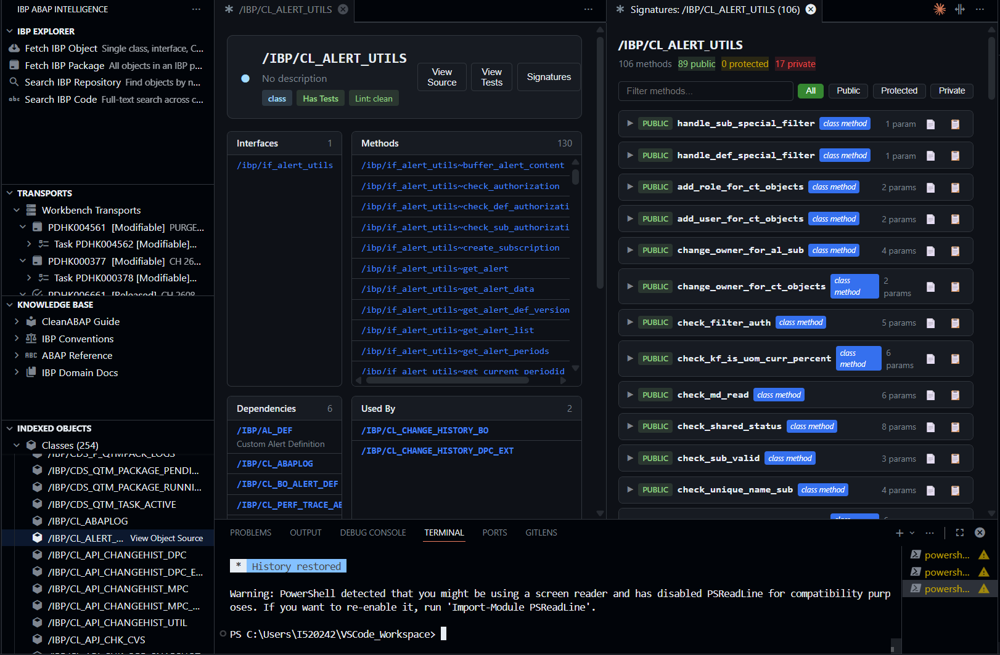

An MCP server and VS Code extension that give Claude Code, Cline, and GitHub Copilot deep access to SAP IBP ABAP source code — with AI-powered code review, test generation, transport analysis, and a unified rules engine built on IBP Conventions and CleanABAP.
Up and running in under two minutes.
Install the Python package, copy .env.example to .env, and fill in your SAP credentials.
Register with Claude Code and start the server. Ask anything about IBP ABAP.
Every tool an ABAP developer needs, available to any MCP-capable AI assistant.
Regex search across cached ABAP, test classes, CDS views, tables, and IBP domain documentation. Fetch and explain any ADT-discoverable object on demand.
Navigate class hierarchies, trace method call graphs, follow CDS view data-source chains, and find all references — all visualized in the VS Code extension.
Browse transport-based change logs, fetch historical source at any version, and diff between two versions of any class or its test include.
6 focused specialist agents run sequentially — Naming, Clean Code, Performance, Exceptions & Logging, Testability, and Semantic Understanding. Each receives prior agents' summaries to avoid duplication. The full class source (up to 200 KB) is passed to every agent so method bodies are always visible.
Streaming multi-agent transport review: a Transport Analyst reads all diffs first, then 6 specialist agents review each object. The full class implementation is always fetched — the LLM never sees definition-only source.
2 795 searchable, tagged rules from IBP Conventions, CleanABAP, and IBP domain docs. get_rules(query, purpose) returns the rules most relevant to the current task — before any code is written.
Generate unit test boilerplate with OSQL environment, TEST-INJECTION stubs, and one test per method. Generate .docx test documentation. Create class skeletons from interfaces and superclass patterns.
Static lint against CleanABAP + IBP conventions. Live SAP compiler syntax check via ADT checkruns. Compare local code against the live SAP system version with a native diff.
Every AI review records a quality score in index.db. get_review_history returns a trend table per object. The VS Code dashboard shows score history alongside version history.
Describe what you want in plain English. The LLM generates ABAP-specific search terms, searches the index, and returns grouped results — no regex required.
AI extracts the business-level summary, domain role (validation / data_access / orchestration / …), complexity, and tags for every method in a class and stores them in index.db. Powers intent search, Semantic Understanding review, and the Object Dashboard method panel.
Preview live data from any DDIC table or CDS view directly from the SAP system. Run freestyle Open SQL SELECT statements and see results as a table. Claude can now look inside configuration tables, key figure mappings, and planning area structures without leaving the conversation.
Full method signatures with parameter types and direction. Resolve DDIC data elements, structures, and table types. Look up T100 message class texts.
Fetch individually, by package, or with full dependency resolution. Automatic stale detection — classes use a lightweight version-list check. Works fully offline from cache.
A standalone web application for deep ABAP code review with transport-level analysis, custom rules, suppression tracking, and PDF/Markdown export. No MCP server or VS Code extension required — runs entirely in your browser.
Every code and transport review runs through six focused specialist agents. The panel opens immediately with pending cards that fill in live as each agent finishes.
Transport reviews add a 7th agent (Transport Analyst) that reads all diffs first and feeds a summary to every specialist.
Requires Python 3.10+ and uv. Works on macOS, Linux, and Windows.
git clone https://github.tools.sap/I520242/ibp-bud6-mcp.git cd ibp-bud6-mcp
pip install -e .
cp .env.example .env # Edit .env with SAP_BASE_URL, SAP_USERNAME, SAP_PASSWORD
python -m sap_ibp_abap_int.rules_ingest
claude mcp add SAP-IBP-ABAP-INT -s user \ -- sap-ibp-abap-int --env-file /path/to/.env
Minimum .env for live SAP access:
SAP_BASE_URL=https://your-system.example.sap SAP_USERNAME=your_user SAP_PASSWORD=your_password SAP_VERIFY_SSL=false
Add these for AI-powered tools:
LLM_PROXY_URL=http://localhost:6655/litellm/v1/chat/completions LLM_API_KEY=your-bearer-token LLM_MODEL=anthropic--claude-4.7-opus
All MCP tools exposed by the server. LLM-powered tools require LLM_API_KEY.
| Tool | Category | Description |
|---|---|---|
| get_rules | Rules | Retrieve relevant rules before any code task. Searches 2 795 tagged rules from IBP Conventions, CleanABAP, and IBP domain docs by purpose (write/review/test) and keyword."Get rules for writing a class with DB access and exception handling" |
| save_custom_rules | Rules | Write team-specific rules back to rules.json. Used by the VS Code custom rules editor. Reloads the review pipeline immediately. |
| get_custom_rules | Rules | Show all active team custom rules from rules.json. |
| search_code | Search | Regex/keyword search across cached ABAP, test classes, CDS views, tables, and CleanABAP guide."Search the IBP codebase for usages of FOR ALL ENTRIES" |
| search_ibp_docs | Search | FTS5 search across ingested IBP domain documentation (config, planning, admin)."What does the IBP documentation say about planning area configuration?" |
| search_adt_objects | Search | Wildcard search against the SAP ADT repository. Filter by object type. |
| search_code_by_intent | Search | Natural language search — LLM generates ABAP-specific search terms then searches the index."Find classes that validate planning area attributes" |
| lookup_object | Search | Get source code of any class, interface, CDS view, or table. Six include modes. Auto-chunks objects > 20 KB."Show me the source code of /IBP/CL_DBP_BO" |
| explain_object | Search | Structured explanation: purpose, public API, patterns, dependencies."Explain what /IBP/CL_CODAP_ORCHESTRATOR does" |
| class_hierarchy | Analysis | Superclass chain and all direct subclasses."Show the class hierarchy of /IBP/CL_MOVE2F_JCE_BADI_ABS" |
| method_callers | Analysis | Call graph: who calls this method and what it calls."Who calls GET_CHANGES in /IBP/CL_ORIGINAL_CHANGES_DATA?" |
| cds_dependencies | Analysis | Recursive CDS view data-source chain with configurable depth. |
| where_used | Analysis | All objects referencing a given class or interface. |
| list_class_versions | History | Transport-based change log: version ID, date, author, description, transport number. |
| get_class_version_source | History | Full source code at a specific historical version. |
| diff_class_versions | History | Unified diff between two historical versions. |
| get_review_history | History | Review score trend for an object — date, overall score, findings by severity."Show the review history for /IBP/CL_DBP_BO" |
| review_abap_code | Quality | Static lint: IBP prefix violations, method length, nesting, modernization, performance anti-patterns. |
| syntax_check | Quality | Live SAP compiler check via ADT. Creates a temp class, runs checkruns, and deletes it. Real compilation errors. |
| diff_abap_conventions | Quality | Compare code against indexed IBP codebase patterns and report deviations with correct examples. |
| diff_with_sap | Quality | Unified diff of local code versus the live SAP system version. |
| ai_review_code | AI Review | Run the full 6-agent review pipeline. Returns per-agent scores and findings. Records score history."Review this ABAP class and give me a score" |
| ai_review_agent | AI Review | Run a single agent from the pipeline by index (0–4). Used by the VS Code extension for live streaming progress. |
| ai_review_transport_prepare | AI Review | Fetch transport metadata and diff manifest without calling the LLM. Used to open the panel immediately. |
| ai_review_transport_agent | AI Review | Run one agent (0=analyst, 1–6=specialists) for a transport review. Always fetches full class source — not definition-only. |
| generate_test | Generation | Template-based unit test skeleton with OSQL env, TEST-INJECTION stubs, one test per public method."Generate unit tests for /IBP/CL_ORIGINAL_CHANGES_DATA" |
| generate_test_documentation | Generation | Generate a .docx test case document (Type A: API/scenario, Type B: integration/component). |
| generate_class | Generation | Full ABAP class skeleton from interfaces and superclass, with IBP logging, exception handling, and TEST-SEAMs. |
| ai_generate_test | Generation | AI-generated complete unit test class. Auto-detects AMDP and switches to AMDP Test Double Framework."Write a complete unit test class for this production code" |
| ai_explain_object | Generation | AI-powered structured explanation: purpose, public API, architecture, design decisions, dependencies. |
| get_method_signatures | Types | Full parameter signatures: direction, type, optional flag, RAISING clauses. |
| get_interface_contract | Types | All methods, constants, and type definitions from an interface. |
| lookup_data_dictionary | Types | Resolve data elements, structures, and table types from ABAP DDIC. |
| lookup_message_class | Types | Look up T100 message texts with placeholder info. |
| fetch_adt_object | ADT | Fetch a single object from SAP via ADT REST and index it locally. |
| fetch_adt_package | ADT | Bulk-fetch all objects in a SAP package at once. |
| fetch_with_dependencies | ADT | BFS traversal: fetch an object and its interfaces, superclass, type refs, static call targets. |
| list_user_transports | Transport | CTS transport requests by user: workbench + customizing, tasks, and contained objects. |
| preview_data | Data | Fetch live rows from a DDIC table or CDS view. Auto-detects type, falls back to freestyle SQL."Show me the contents of /IBP/TS_KFMAP" |
| query_data | Data | Execute a freestyle Open SQL SELECT against the SAP system and return results as a table."SELECT DRIVERID, STATUS FROM /IBP/C_DBP_DRIVER_STATUS WHERE STATUS = 'DELETED' UP TO 20 ROWS" |
| ai_extract_method_index | AI | AI extracts business summary, role, complexity, and tags for every method in a class. Call once before feature_finder or search_method_index."Extract semantics for /IBP/CL_CODAP_DPC_EXT" |
| get_method_index_for_class | Semantic | Return all stored method semantics for a class — summaries, roles, complexity, domain tags. |
| search_method_index | Semantic | FTS5 full-text search over extracted method summaries and tags."Find methods that validate key figures" |
Environment variables — read from a .env file or system environment.
| Variable | Required | Default | Description |
|---|---|---|---|
| SAP_BASE_URL | For live fetch | — | SAP system URL (ADT endpoint) |
| SAP_USERNAME | For live fetch | — | SAP ADT user |
| SAP_PASSWORD | For live fetch | — | SAP ADT password |
| SAP_VERIFY_SSL | No | false | SSL certificate verification |
| SAP_CLIENT | No | — | SAP client number |
| IBP_DATA_DIR | No | (package data/) | Cache and log directory |
| IBP_CACHE_TTL_HOURS | No | 24 | Hours before cached objects are considered stale |
| LLM_PROXY_URL | For AI tools | — | OpenAI-compatible chat completions endpoint |
| LLM_API_KEY | For AI tools | — | Bearer token for the LLM proxy |
| LLM_MODEL | No | anthropic--claude-4.7-opus | Model identifier for the LLM proxy |
claude mcp add SAP-IBP-ABAP-INT -s user \ -- sap-ibp-abap-int --env-file /path/to/.env
{
"servers": {
"SAP-IBP-ABAP-INT": {
"command": "sap-ibp-abap-int",
"args": ["--env-file", "/path/.env"]
}
}
}Every MCP server tool visualized — browse, review, and generate ABAP without leaving the editor. Three sidebar panels, 60+ commands, and 5 editor toolbar buttons on every .abap file.

Five buttons on every .abap file. The panel opens immediately and results stream in live.
Opens a panel instantly with 6 pending agent cards. Each card fills in live as that specialist agent completes — score badge, findings, suggested fixes. Click a line number to jump to it. Click Apply to replace the line directly in the editor.
Real SAP compiler check via ADT. Creates a temp class, pushes your code, runs checkruns, cleans up. Catches compilation errors static analysis misses. Results in a webview with clickable line numbers.
AI-generated complete ABAP unit test class. Auto-detects AMDP classes and switches to the AMDP Test Double Framework. Opens ready to copy into your test include.
Rich contextual explanation in collapsible sections: Purpose, Public API, Architecture, Key Design Decisions, Dependencies. Hover over any /IBP/ identifier in any ABAP file to get a quick version.
Fetches the live version from SAP via ADT and opens a native VS Code side-by-side diff. Instantly see what's different between your local file and the system version.
Recently added to the extension.
Every review finding with a corrected_code suggestion now has an Apply button. Replaces the target line in the active editor immediately. Ctrl+Z to undo.
Manage team-specific review rules directly in VS Code — add, edit, delete, save. Rules are picked up by the review pipeline immediately. Open via the pencil button in the Indexed Objects or Transports view title bar.
Right-click any class → Show Review Score History, or use the graph button in the Indexed Objects title bar. Shows a scored table of all past AI reviews with color-coded trends. Also shown on the Object Dashboard.
Transport review streams live — 7 agents (Transport Analyst + 6 specialists) fill in as they complete. The full class implementation is always fetched so the LLM sees actual method bodies, not definition-only source.
Each agent section shows a color-coded score badge (green ≥ 80, orange ≥ 60, red < 60). An overall score appears in the panel header. Clean agents show a ✓ indicator instead of a finding count.
When a .abap file is open, IBP Explorer shows a collapsible section at the top with 10 one-click actions for that class: Dashboard, AI Review, Signatures, Version History, Where Used, Hierarchy, Generate Test, Syntax Check, Compare with SAP — no prompts needed.
A fourth sidebar panel logs every action chronologically — reviews, fetches, dashboards opened, syntax checks, diffs. Each entry shows type, time-ago, and is clickable to re-open the relevant object's dashboard.
Objects cached more than 24 hours ago show a colour-coded staleness indicator directly on the tree item — amber for 1–6 days old, red for 7+ days. Hover to see the exact age and a re-index hint.
The Object Dashboard fetches the Where Used list live from SAP on every open — no longer limited to the local index. Results appear alongside Dependencies, showing all real callers up to 50 entries, clickable to their dashboards.
Extract AI-generated summaries, domain roles, complexity ratings, and tags for every method in a class. The Object Dashboard shows semantics inline per method and a ✎ button lets you edit them directly with VS Code input boxes. Objects with semantics show a [sem] badge in the Indexed Objects tree.
Right-click any table or CDS view in the Indexed Objects tree → Preview Data to fetch live rows from SAP in a side panel. A filter bar narrows results client-side. The Query Data command runs any Open SQL SELECT and shows the result as a sortable table.
Four sidebar panels, interactive graphs, and a full object dashboard.
IBP Explorer (with current-file quick actions), Transports for CTS contents, Indexed Objects with stale-cache badges, and Recent Activity tracking all actions chronologically.
Type, description, interfaces, methods, dependencies, live Where Used from SAP (up to 50), version history, and review score history — all loaded in parallel on open. Click any item to navigate its dashboard.
SVG graphs for class hierarchies, CDS view lineage, method call graphs, and where-used references. Click nodes to navigate. Zoom, pan, export SVG.
Timeline webview with main/test class tabs, diff controls, and the ability to view full source at any historical version.
Card-based view of all methods with full parameter tables — direction, name, type, optional flag. Filter by visibility. Click DDIC types to navigate to their definition.
Lint-on-save for .abap files. Findings appear as VS Code squiggles and inline problems, allowing you to see issues without opening any panel.
Build the VSIX from source and install it into VS Code. Requires Node.js 18+ and npm.
git clone https://github.tools.sap/I520242/ibp-abap-int-extension.git cd ibp-abap-int-extension
npm install npm run build:vsix
.vsix file and reload VS Code when promptedibpAbap.autoConnect is true by defaultLLM_PROXY_URL, LLM_API_KEY, and LLM_MODEL to the server's .envTEST_SYNTAX_CHECK package under $TMPConfigure via VS Code settings (Ctrl+,) under the "IBP ABAP" category.
| Setting | Default | Description |
|---|---|---|
| ibpAbap.serverCommand | sap-ibp-abap-int | Command used to launch the MCP server process |
| ibpAbap.envFile | — | Path to .env file with SAP credentials (auto-detected if empty) |
| ibpAbap.dataDir | — | Path to MCP server data directory (auto-detected if empty) |
| ibpAbap.autoConnect | true | Connect to MCP server automatically on extension activation |
| ibpAbap.lintOnSave | true | Run static ABAP lint when saving .abap files |
| ibpAbap.maxSearchResults | 50 | Maximum number of search results to show |
rules.db) contains 2 795 tagged rules from IBP Conventions (13 topics), CleanABAP (134 sections), and IBP domain documentation (2 646 chunks). Each rule has a source, category (naming/methods/exceptions/etc.), and purpose (write/review/test). get_rules(query, purpose) uses FTS5 to return the most relevant rules before any code task. Team-specific rules can be added via the VS Code custom rules editor and are stored in rules.json.diff_with_sap and get_sap_source opportunistically update the index when they detect differences — zero extra round-trips.